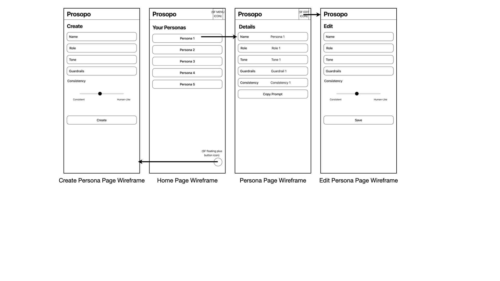
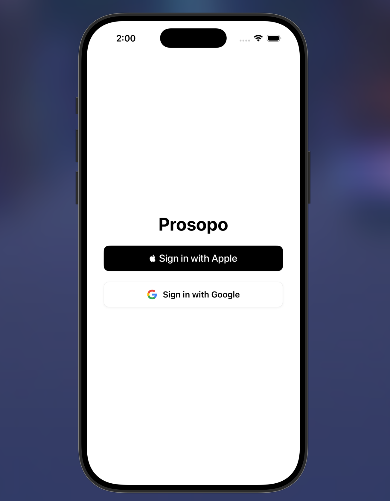

Core app shipped, widget in progress. An iOS app for creating, storing, and reusing AI personas as clean system prompts, built solo in SwiftUI with MVVM, SwiftData, Firebase, and a WidgetKit extension.
The wireframe below maps the full navigation and interaction flow across all screens before a single line of code was written.

The authentication screen is the first thing a user sees. Two sign in options are presented: Sign in with Apple and Sign in with Google, both backed by Firebase Auth. The screen is intentionally minimal with no email or password fields, no terms checkbox, and no marketing copy. The user makes one decision and moves forward.
This section documents how the authentication screen was designed to meet Apple Human Interface Guideline requirements for apps that offer Sign in with Apple alongside third party sign in options.
Button ordering: Apple requires that Sign in with Apple always appears above any alternative sign in method when both are offered on the same screen. This is a mandatory HIG requirement, not a suggestion. In Prosopo, Sign in with Apple is the first and visually dominant button, with Sign in with Google appearing directly below it. Reversing this order would result in App Store rejection.
Button style: The Sign in with Apple button uses the official black filled style with the Apple logo glyph and the exact label text "Sign in with Apple". The HIG specifies approved button styles (black filled, white filled, white with outline) and prohibits custom colours, custom glyphs, or modified label text. Using ASAuthorizationAppleIDButton from the AuthenticationServices framework ensures the button renders to spec automatically and adapts to system appearance changes.
Touch target compliance: Both buttons span the full usable width of the screen with generous vertical padding, well above the 44pt minimum touch target size defined in the HIG. This is especially important on an authentication screen where a missed tap before the user is inside the app creates an immediate negative first impression.
Privacy first design: Sign in with Apple allows users to hide their real email address using a relay address. No email is stored or required by Prosopo at sign in. The app requests the minimum necessary information (user identifier only) and stores nothing beyond what Firebase Auth provides. This aligns with the HIG principle that apps should request only the data they need, when they need it.
Visual hierarchy: The screen uses a single centred layout with the app name above the buttons and nothing else. No background imagery, no decorative elements, no secondary actions. This keeps the cognitive load at zero and makes the sign in action the only available path forward, which is the correct pattern for a mandatory authentication gate.

Prosopo lets users define reusable AI personas: a name, role, tone, and guardrails, and turns them into clean, consistent system prompts they can drop into ChatGPT, Claude, Gemini, or any other AI assistant. Rather than rewriting the same instructions every time, users build a small library of personas and reuse them across conversations.
The app is built entirely solo in SwiftUI using MVVM architecture, with two tier local and cloud persistence, Sign in with Apple and Google Sign In via Firebase Auth, and a WidgetKit home screen widget for quick access to favourite personas.
Every persona in Prosopo has a computed temperature value that is sent to the OpenAI API on every completion request. Temperature controls how deterministic or creative the model's output is. A value of 0.0 makes the model almost entirely deterministic, producing the same output for the same input every time. A value of 1.0 makes it highly variable and creative. Most production use cases sit between 0.1 and 0.7.
Prosopo exposes two controls to the user: tone and a consistency slider. Neither surface the raw temperature value directly. The final temperature is computed from both inputs using this formula:
The result is clamped to the range 0.0 to 1.0.
The base temperature is looked up from a fixed map keyed on the persona tone the user selected:
| Tone | Base | Notes |
|---|---|---|
| Precise | 0.1 | Maximally deterministic, technical accuracy first |
| Concise | 0.2 | Tight and controlled, minimal variation |
| Assertive | 0.3 | Confident, low drift |
| Constructive | 0.35 | Balanced, slightly warmer than assertive |
| Supportive | 0.5 | Mid range, some natural variation in phrasing |
| Friendly | 0.6 | Conversational, more expressive |
The consistency slider runs from 0 (labelled "Consistent") to 1 (labelled "Human-Like"). At 0.5 the slider contributes zero net change to the base temperature: (0.5 - 0.5) x 0.4 = 0.0. Sliding toward 0 pulls the temperature down by up to 0.2, making the model more locked in. Sliding toward 1 pushes it up by up to 0.2, introducing more human like variability in phrasing and structure.
For example, a Precise persona at full consistency (slider at 1.0) computes: 0.1 + (1.0 - 0.5) x 0.4 = 0.1 + 0.2 = 0.3. A Friendly persona at minimum consistency (slider at 0.0) computes: 0.6 + (0.0 - 0.5) x 0.4 = 0.6 - 0.2 = 0.4. The formula keeps the full range of any tone within a 0.4 window, preventing any single slider position from producing extreme or unpredictable behaviour.
This design decision keeps temperature as an implementation detail the user never has to think about. A non technical user does not know what temperature 0.35 means. They do know whether they want a precise assistant or a friendly one, and whether they want responses to feel consistent or more human. The two controls map directly onto those intuitions and translate them into the right model behaviour automatically.
One feature in Prosopo lets a user describe a persona in plain language and have the app fill in the form fields automatically. The user types something like "a firm but encouraging personal trainer who keeps responses short" and the app generates a complete persona from it.
The implementation sends that description to the OpenAI API with a structured system prompt that instructs the model to return a strict JSON object matching the Persona schema: name, role, tone (constrained to the six valid PersonaTone values), guardrails, and consistency as a float between 0 and 1. The response is decoded directly into a Persona model. Malformed values and out of range floats are caught and clamped rather than allowed to corrupt the model state.
This pattern works well for two reasons. First, a language model is genuinely good at inferring structure from vague intent. "Firm but encouraging" maps naturally to assertive or constructive tone. "Keeps responses short" maps to concise. The model does not need to be told the rules for each tone explicitly because it already has enough context from the tone names and the description to make good inferences.
Second, the output is bounded. By specifying a closed enum of valid tone values in the prompt and decoding into a typed Swift model, any response that does not fit the schema is caught at the decode step. The model cannot return an invalid tone value and have it silently accepted. This makes the LLM assisted creation flow as reliable as the manual one for downstream use.
The result is that persona creation goes from a multi field form the user fills out manually to a single text input. The user describes what they want in natural language, the model interprets it, and a fully configured persona is ready to use in seconds.
Using an LLM to generate prompts that are then used to steer a second LLM call might seem redundant but it is actually a meaningful efficiency gain for the user. Writing a good system prompt from scratch requires knowing what makes a prompt effective: how to frame the role, how to constrain tone, how to set guardrails. Most users do not know this. Prosopo removes that requirement entirely.
The persona creation call is a one time cost per persona. Once the persona is saved to Firestore, every subsequent conversation using it sends only the generated system prompt plus the user message. There is no LLM call at the creation step if the user fills the form manually, and the suggestion call is optional. Either path produces the same output: a stored persona with a computed temperature that controls model behaviour on every use.
The architecture also means Prosopo is not locked to any single LLM provider. The persona format (role, tone, guardrails, temperature) is provider agnostic. The app currently targets OpenAI for generation and supports copying the prompt to ChatGPT, Gemini, or any other AI assistant the user chooses. The prompt is the portable unit, not the provider.
Persona drafts are saved locally in SwiftData so they survive app restarts before the user commits. Finished personas sync to Firestore scoped per authenticated user. Favourites live in App Group UserDefaults so the WidgetKit extension can read them without a network round trip. The OpenAI API is called for persona suggestion, as structured JSON, and for prompt generation.
Drafts live locally in SwiftData so an in progress persona survives an app restart before the user commits to it. Finished personas sync to Firestore, scoped per authenticated user. This separation means the app is fully usable offline for persona management, and cloud sync only happens on deliberate save actions.
Each persona has a tone, precise, supportive, constructive, concise, assertive, or friendly, each mapped to a base LLM temperature from 0.1 to 0.6. Rather than exposing raw temperature to the user, the UI exposes a single consistency slider from 0 to 1. The actual temperature sent to OpenAI is computed as the base value plus the consistency offset from 0.5, scaled by 0.4, then clamped to the 0 to 1 range. This keeps the control intuitive for non technical users while still giving fine grained influence over response determinism.
One feature lets a user describe a persona in plain language and have the app fill in the form fields automatically. Rather than treating this as a simple chat completion, the request instructs OpenAI to return strict JSON matching the persona schema, including a closed set of valid tone values, which is decoded directly into a Persona model. Malformed or out of range values are caught and clamped rather than allowed to corrupt the model state.
Favourites are stored in shared App Group UserDefaults specifically so the WidgetKit extension can read them without a network round trip. A widget that required a network call on every timeline reload would be slow and battery inefficient. App Group storage gives the widget instant read access to the same data the main app writes.
Persona tiles support four interactions on the same tap target: single tap to view, double tap to edit, triple tap to delete with confirmation, and long press for a quick action menu. The implementation debounces the single tap behind a cancellable DispatchWorkItem and uses simultaneousGesture for the long press, so a double or triple tap cancels the pending single tap action before it fires instead of running both handlers.
| Service | Role | Auth method |
|---|---|---|
| Firebase Auth | Sign in with Apple and Google Sign In | Apple nonce + SHA256, Google Sign In SDK |
| Firestore | Cloud persistence for finished personas per user | Firebase Auth UID scoping |
| OpenAI API | Persona suggestion (structured JSON) and prompt generation | API key, server side in production |
| SwiftData | Local persistence for drafts | No external auth, on device only |
| WidgetKit | Home screen widget for quick persona access | App Group entitlement |
| App Groups | Shared UserDefaults between main app and widget | Provisioning profile entitlement |